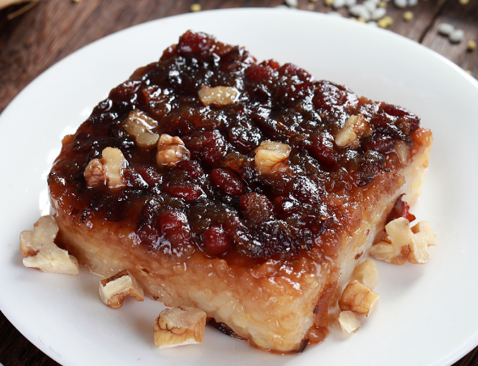

甑糕

甑糕（甑，zèng，关中方音中为韵腹高元音，读作zìng，讹作jìng）， [5-6]是西安、关中地区、晋南地区 [1]的传统风味小吃。 [1]用糯米、红枣或蜜枣蒸制而成；有的会加红豆、葡萄干等置铁甑上蒸制而成。
甑糕小吃历史悠久。甑，是中国古代一种非常古老的蒸器，有陶制、铜制、木制、铁制等，后经民间传承，将铁甑保留，而用之蒸制的粘糕也别有风味。
甑糕，形色俱佳，软硬适度，软甜粘劲，味道醇厚，实为冬春早点的佳品。
由于红枣和糯米营养丰富，滋补强身，因而甑糕受到各阶层消费者的好评。当年冯玉祥将军把“西安甑糕”誉为“平民阶层的燕菜”。西安、关中地区开会，早点多食甑糕。村民赶集赴会，都要吃一盘甑糕打点；返回时还买上一两盘，以虎皮叶包装，带回家里让家人同享口福。